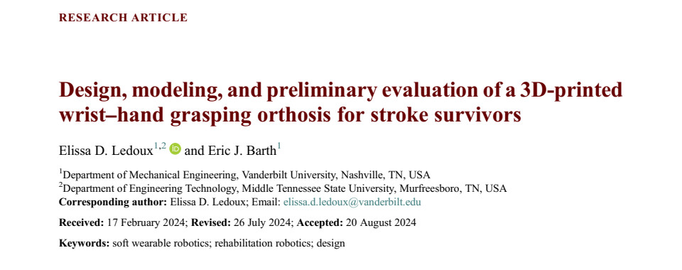
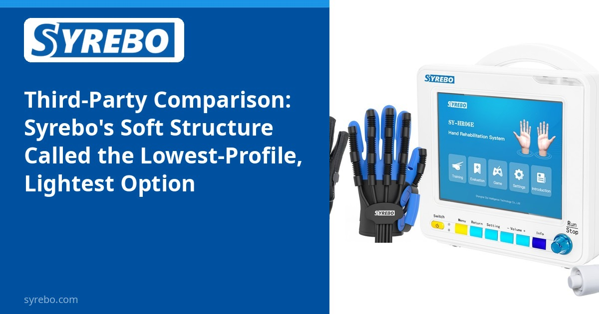
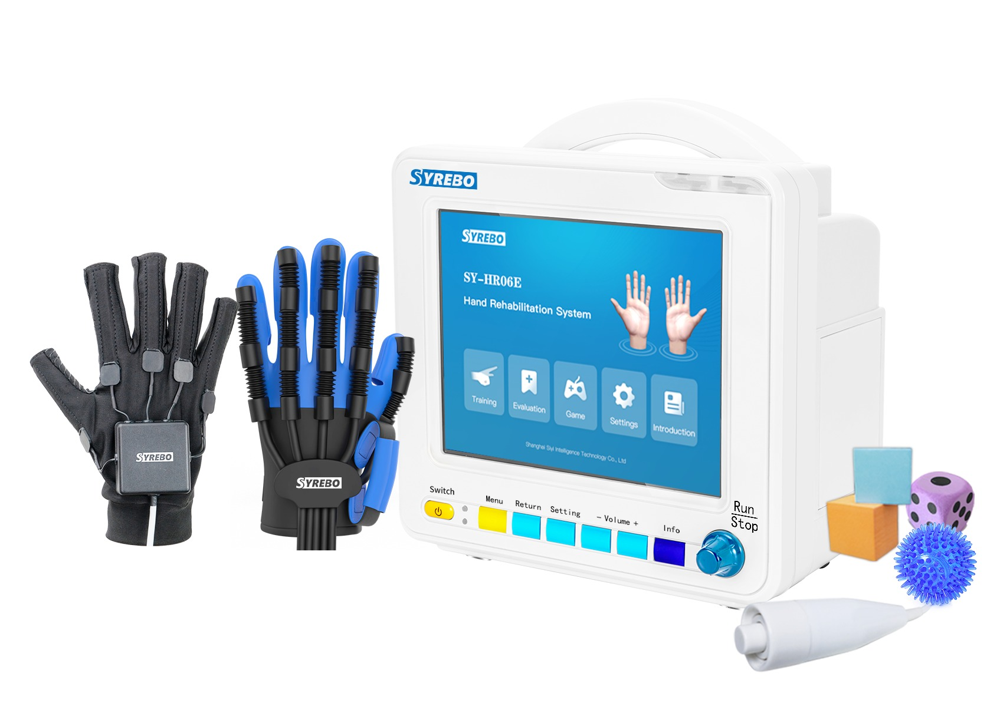

Syrebo rubrika kliničkih istraživanja
Čitanja temeljena na dokazima o robotskoj rehabilitaciji šake
Iz članka
Design, modeling, and preliminary evaluation of a 3D-printed wrist-hand grasping orthosis for stroke survivors
Ledoux ED, Barth EJ
Wearable Technologies, 2024; 5: e12
DOI: 10.1017/wtc.2024.18 · PMID: 39575325 · PMC11579884



Godine 2024. Wearable Technologies, Cambridge University Press, objavio je članak o dizajnu Ledouxa i Bartha sa Sveučilišta Vanderbilt. Uređaj koji su izradili i preliminarno procijenili njihova je vlastita 3D tiskana ortoza hvata zapešća i šake. Članak spominje Syrebo u uvodnoj raspravi, ali riječ je o povezanom istraživanju i ispitani prototip nije bio uređaj Syrebo. Fotografija proizvoda Syrebo ilustrira rehabilitaciju šake; nije uređaj ispitan u ovom istraživanju.
Uređaj za šaku koji napušta sobu za terapiju mora odgovoriti na težinu, profil i može li ga osoba staviti. Članci o dizajnu obično navedu ta ograničenja pa opišu prototip. Ne izvještavaju najprije o multicentričnom funkcionalnom ispitivanju. Čitati članak o dizajnu kao članak o djelotvornosti izmišlja kliničke ishode koji nisu mjereni.
Meka struktura i kruti egzoskelet odgovaraju na različite inženjerske probleme. Mekoća je jedan način smanjenja profila. Govor o funkcionalnoj promjeni i dalje traži zasebnu studiju na ljudima.
Izvadak gore prva je stranica otvorenog pristupa (CC BY 4.0), ne tablica usporedbe. Fotografija proizvoda pokazuje klinički sustav Syrebo rukavice. Nije slika iz ovog pokusa.
Dizajn studije
Dizajn, modeliranje i preliminarna procjena vlastite 3D tiskane ortoze autora. Članak nije randomizirano ispitivanje Syreba i nije usporedba djelotvornosti među uređajima na tržištu.
Uzorak i raspored
Autori su razgovarali sa 153 osobe, uključujući pacijente, njegovatelje i zdravstvene djelatnike, kako bi usmjerili dizajn. Zatim su svoj prototip procijenili s jednom osobom nakon moždanog udara.
Glavni nalazi
U preliminarnoj procjeni autori su naveli da je njihov prototip mogao uhvatiti i držati predmete. Taj se nalaz odnosi na uređaj autora i jednu osobu.
Članak je u rubrici da studija dizajna ostane odvojena od ispitivanja djelotvornosti. Čini li meka struktura uređaj lakšim za nošenje u svakodnevici, zasebno je studija nošenja i funkcionalna studija.
Otvoreni pristup čitatelju dopušta provjeru formulacije. Svrha provjere je da pretpostavka ne postane zaključak, ne da se proizvodi rangiraju.
Ograničenja Ovo je preliminarni dizajn i procjena prototipa autora s jednom osobom nakon moždanog udara. Nije ispitivanje uređaja Syrebo i ne utvrđuje dugoročne učinke terapije.